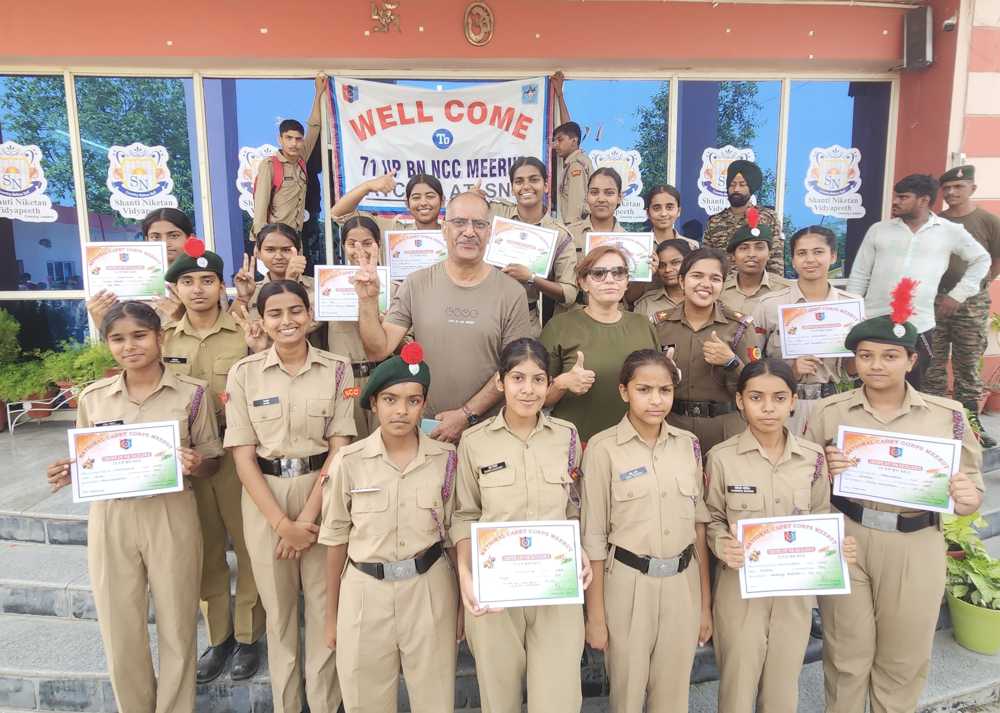
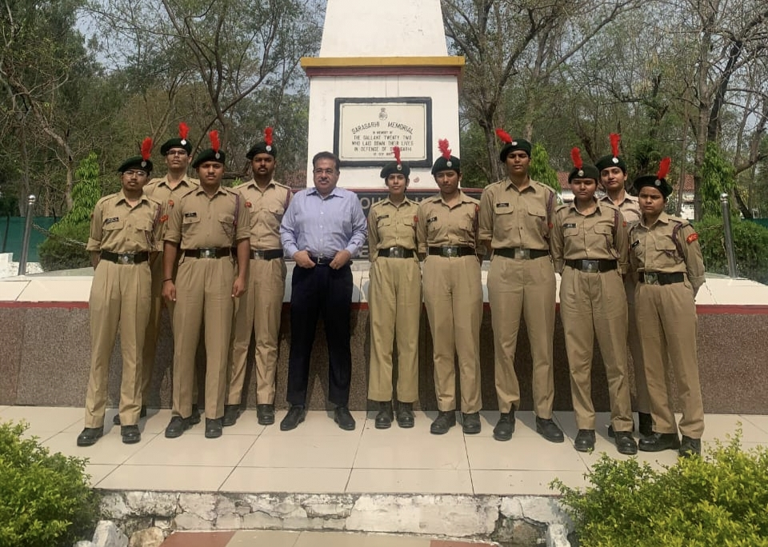
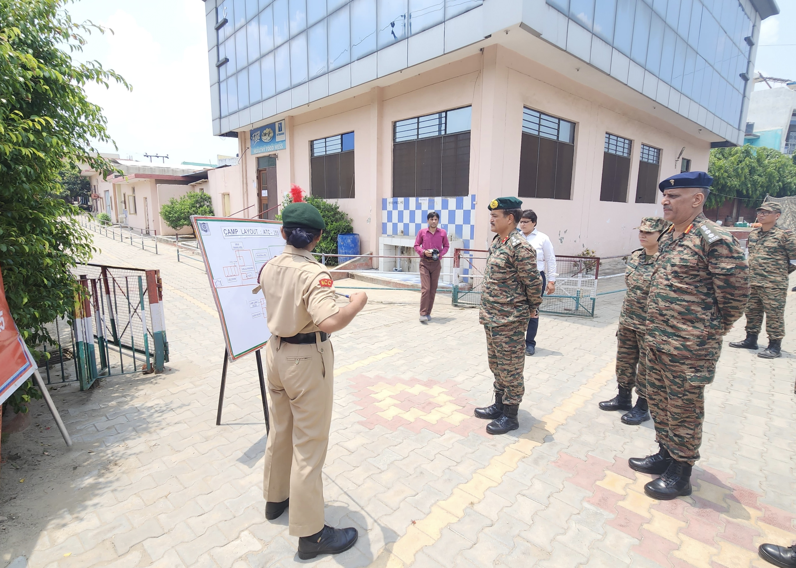
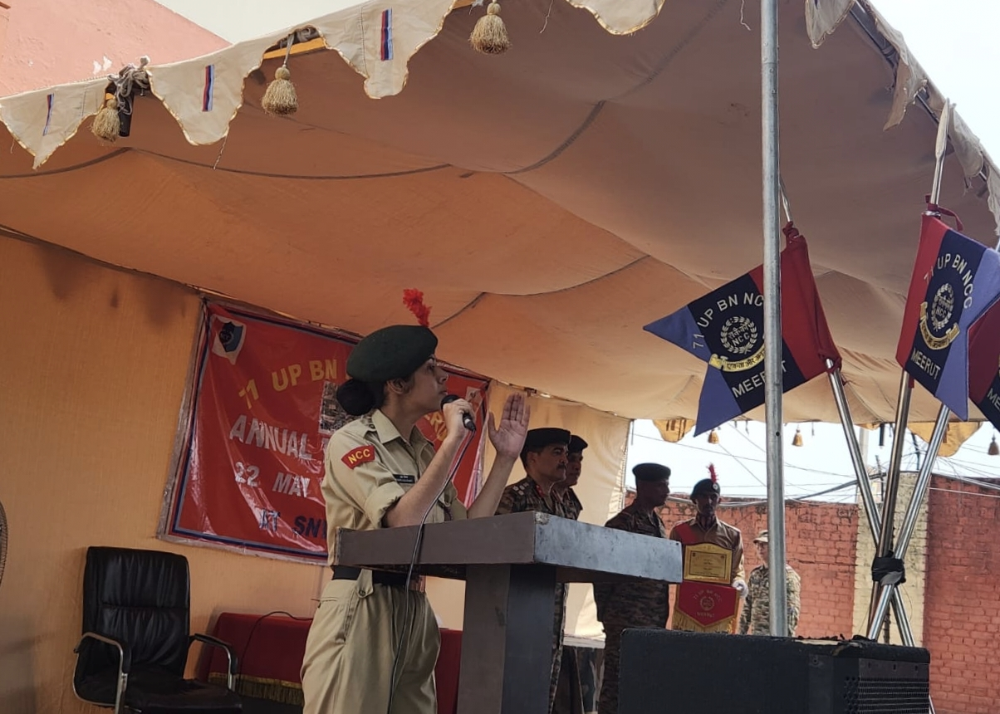
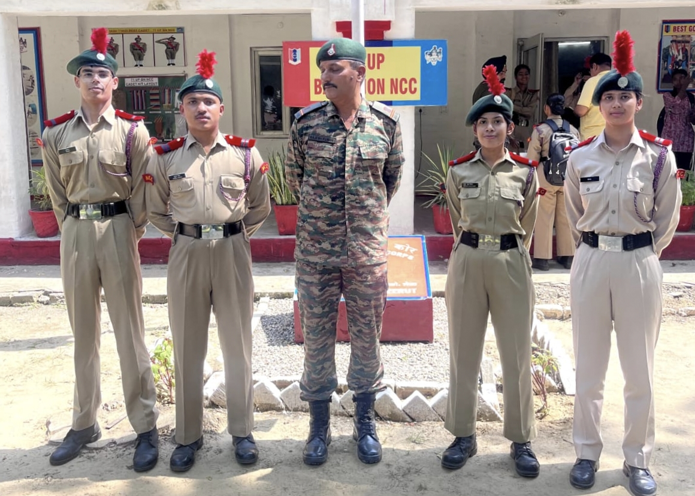
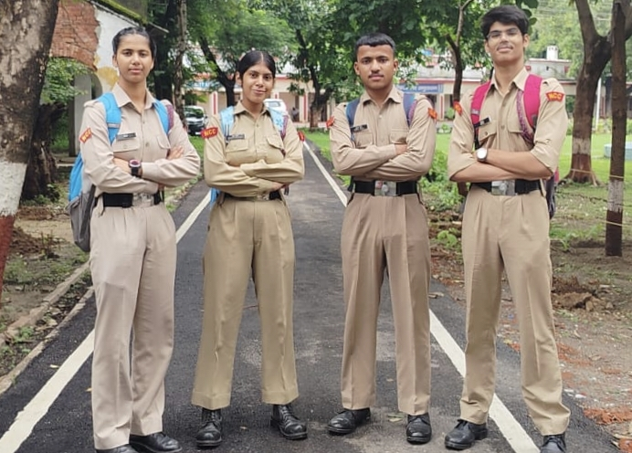
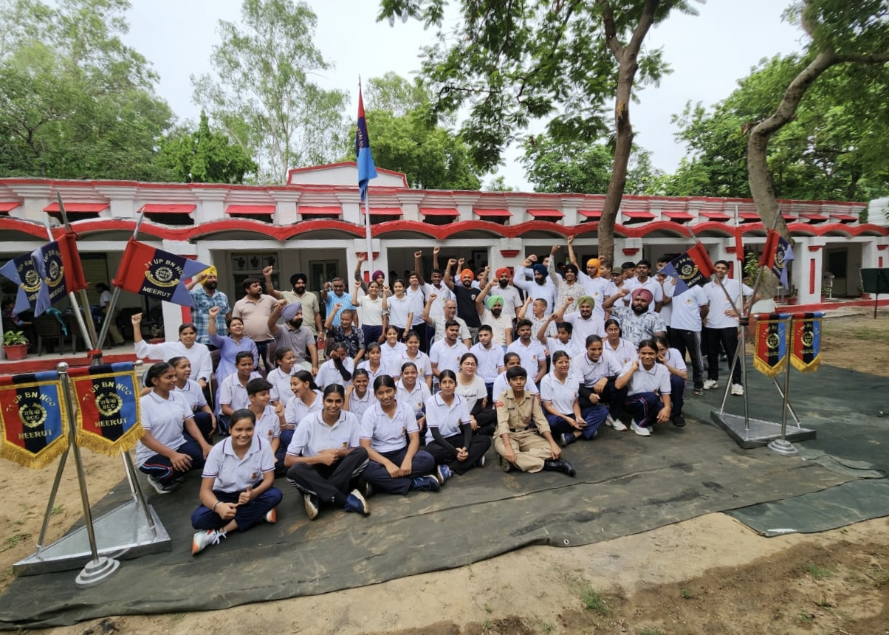
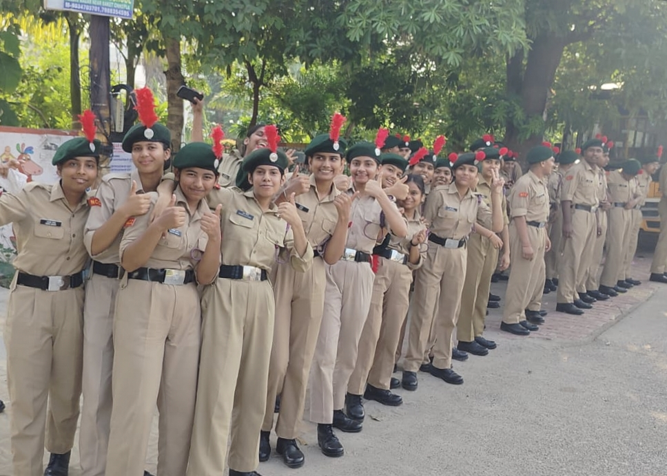

Our school proudly has an NCC Army Wing under the 71 UP Battalion, guided by our ANO, Tushar Sir. Every year, around 35 to 40 students get the opportunity to join NCC and become part of this disciplined and respected unit. NCC parades are held every Monday and Tuesday, where cadets take part in drill practice, theory classes, obstacle training, health and hygiene sessions, basic weapon training, and field battle exposure. The training gives students a real glimpse of military life while building confidence and teamwork.
Cadets also get chances to attend special camps like the Republic Day Camp, TSC, and trekking camps, which are great learning experiences. NCC even provides preference in certain government job opportunities. Our school’s NCC unit is well-known, and our cadets are considered among the best for their discipline and performance in extracurricular activities. The unit is currently led by senior cadets Suraj, Pragya, Riya, and Aditi, who inspire and guide others.
NCC is not just about uniforms and parades, it helps shape students into responsible, confident, and disciplined individuals. It teaches leadership, punctuality, teamwork, and gives students a strong sense of responsibility towards the nation. Being a part of NCC truly helps in becoming a better and more confident person.